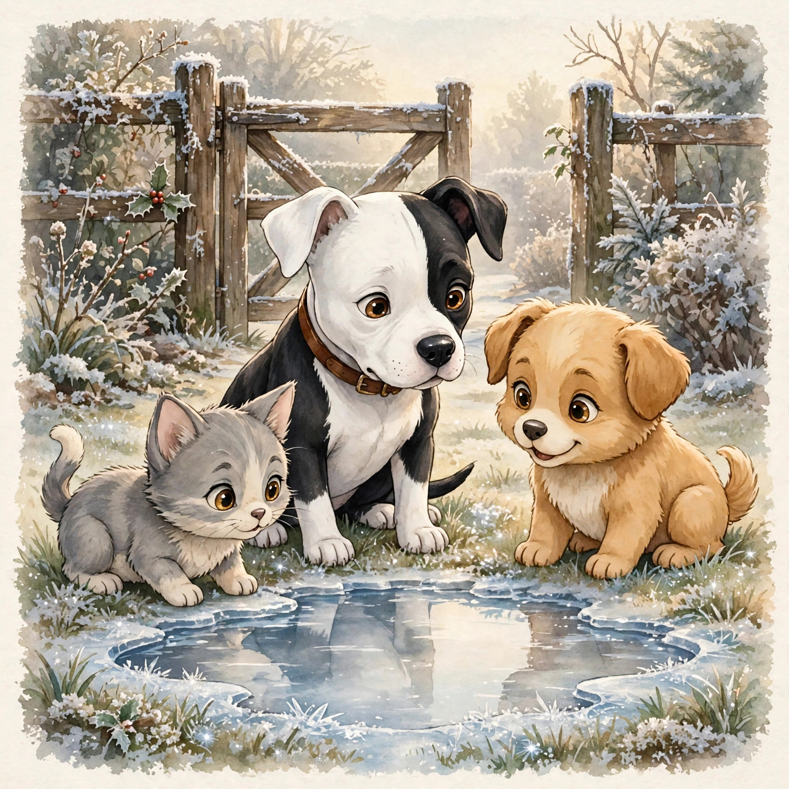
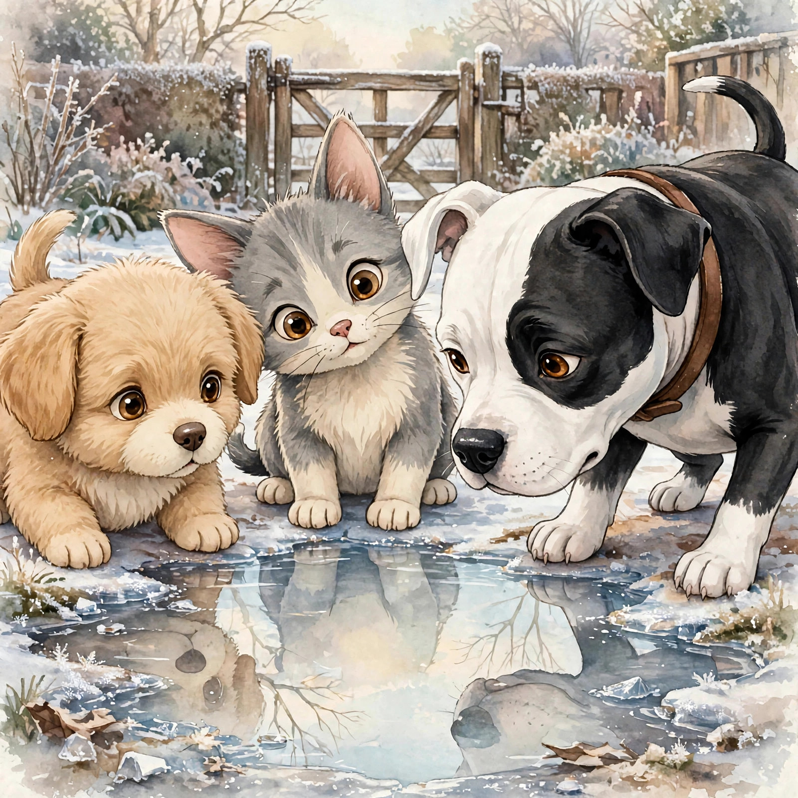
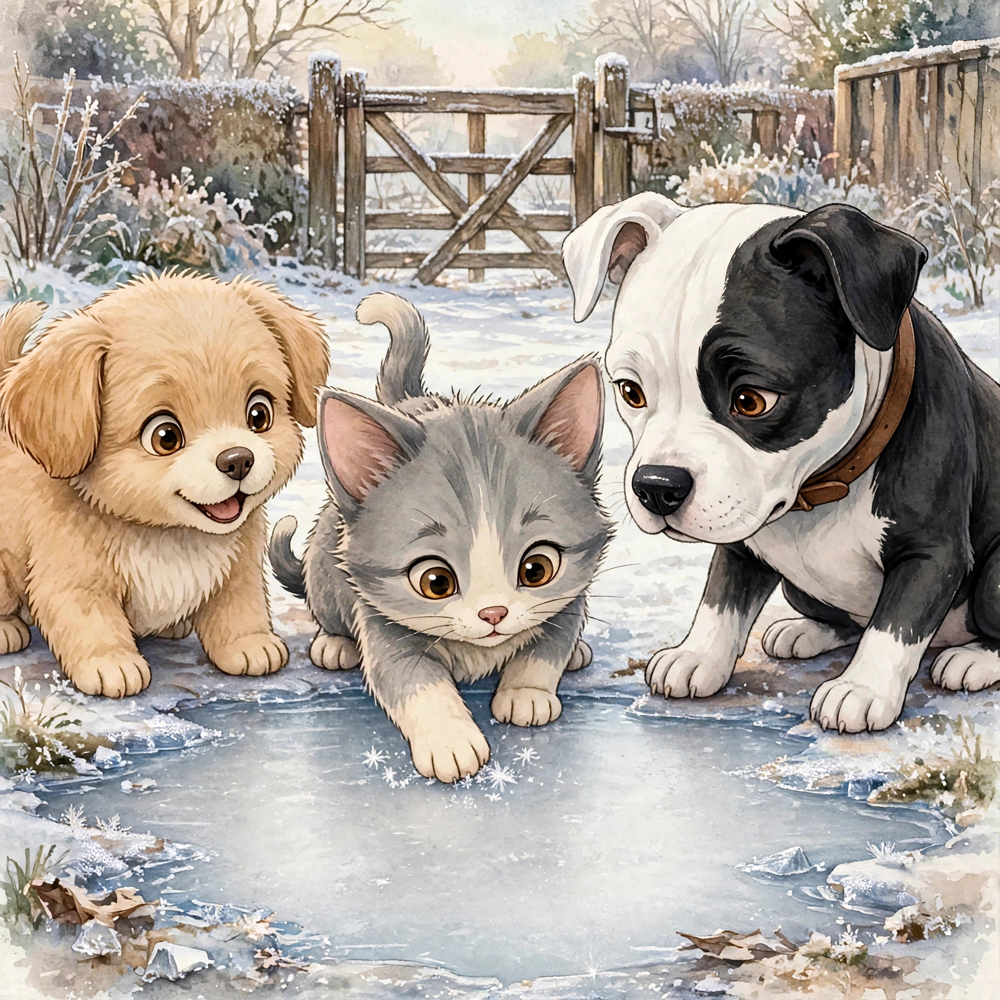
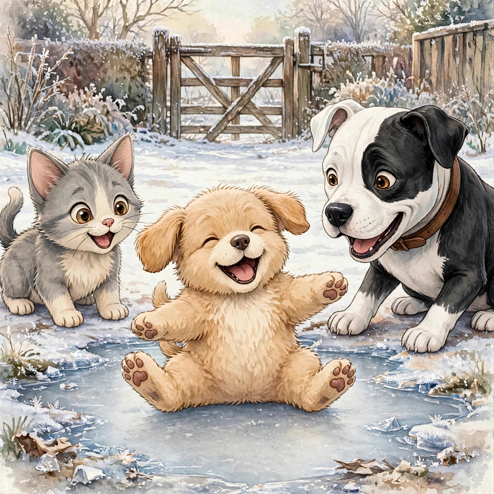
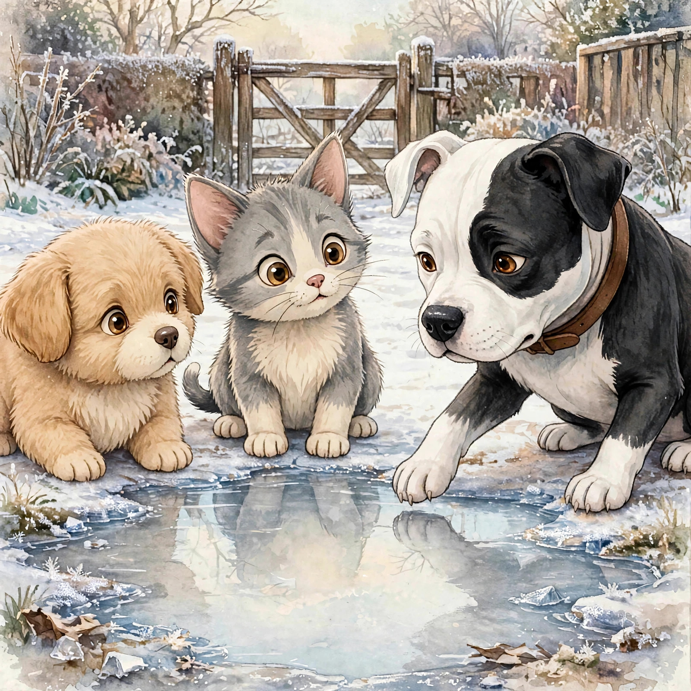
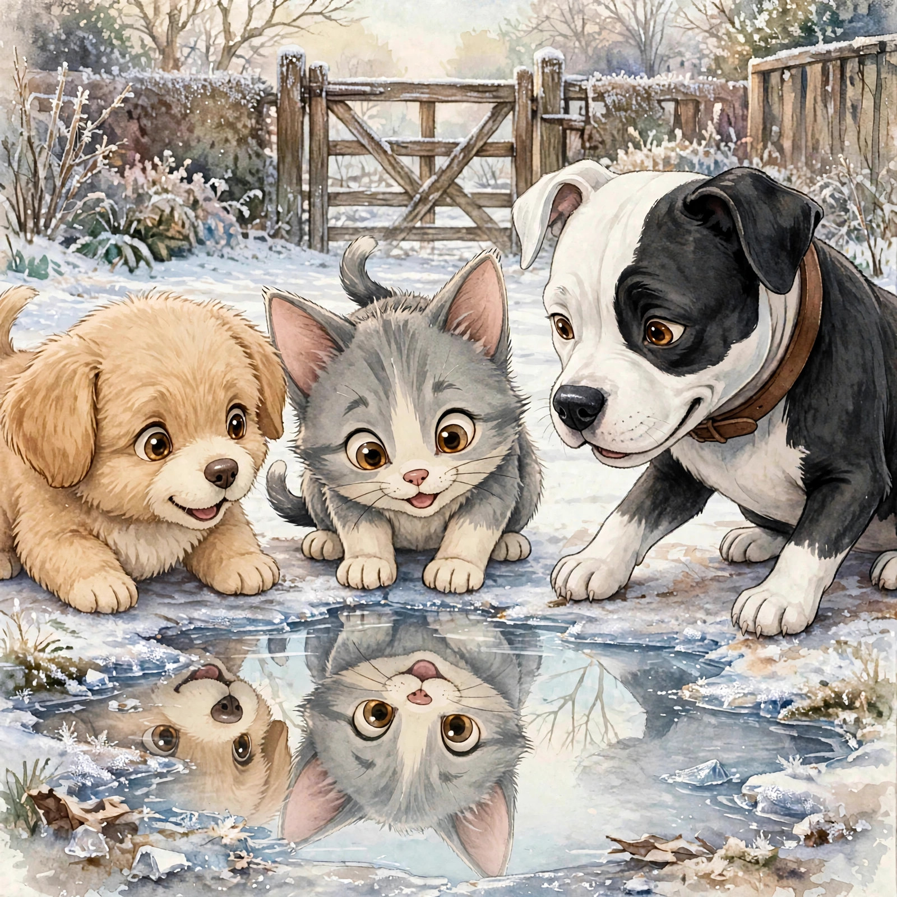
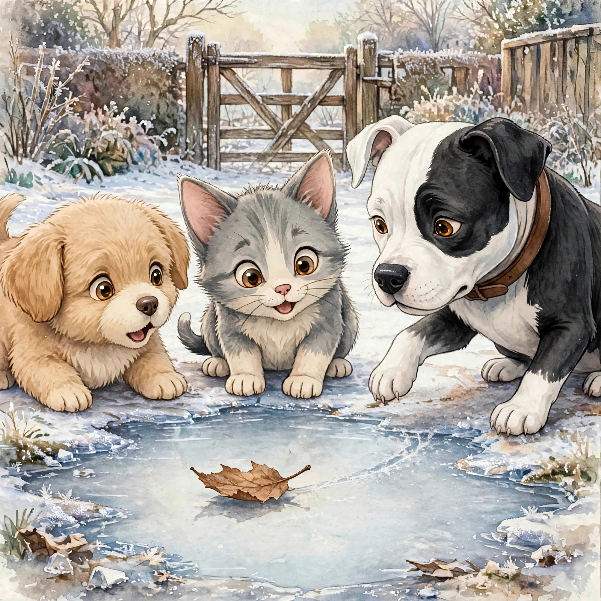
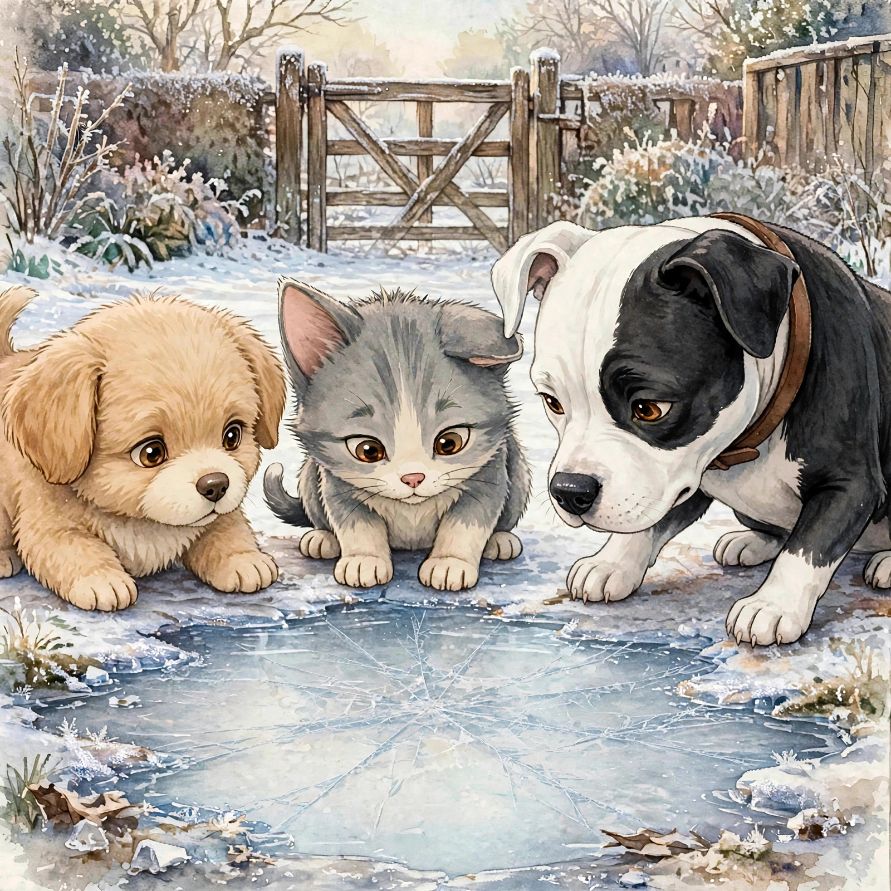
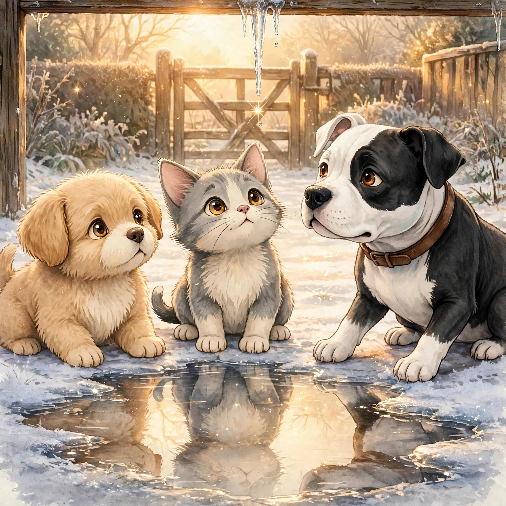

The Hard Water
A read-together story for Leiann and Einar, with Muffin, Pip, and Biscuit.

It was a cold morning just before Christmas, and the garden looked different.
The grass sparkled. The gate sparkled. Even the puddle by the gate sparkled.
"Something happened last night," said Muffin. "Come and see."

The three friends stood around the puddle.
But the puddle was not wet anymore. It was smooth, and shiny, and still, like a mirror lying on the ground.
Pip tilted her head. "What happened to the water?"

Pip is small, and Pip is brave, so Pip reached out one paw and touched it.
Tap. Tap.
"It is hard!" said Pip. "The water turned hard!"

"I want to touch it too!" said Biscuit, and he ran at the puddle on his short, happy legs.
But the hard water was slippery, and Biscuit's feet went every which way.
Plop! He sat down hard on the cold, shiny ground. "I am okay!" said Biscuit, laughing. "It is slippery too!"

Muffin put her paw down slowly and carefully, and then she remembered.
Last winter, when she was smaller, the very same thing had happened to this very same puddle, and she had been just as surprised as Pip.
"It is ice," she said. "When the night gets cold enough, water turns into ice, the way you turn into a blanket burrito when you get cold. I remember now."

Pip leaned close and looked into the ice.
"I can see me!" she said. A little Pip looked back at her from under the ice.
Biscuit looked too, and the Biscuit under the ice wiggled when he wiggled.

Muffin found a dry leaf and set it on the ice and gave it the tiniest push.
The leaf slid, and slid, and slid, all the way across, like a boat with no water.
"Again!" said Biscuit. So they slid the leaf again, and again, and again.

Then Pip heard something. Tick. Tick. Crackle.
"The ice is talking," she whispered.
"It is just the cold, settling in," said Muffin. "Ice sings a little when it is very, very cold."

When the sun came up over the fence, it touched the edge of the puddle first, and there the ice began to soften and turn back into water, shining at the rim.
Over their heads, an icicle hung from the gate where the frost had built it in the night, and the sun touched that too.
"Do not worry," said Muffin. "Ice always comes back on cold nights. And tomorrow is Christmas."
The three friends watched the first drip fall from the icicle, bright as a tiny star.
Drip. "Merry Christmas, ice," said Pip.
The end.
Love, Jackie